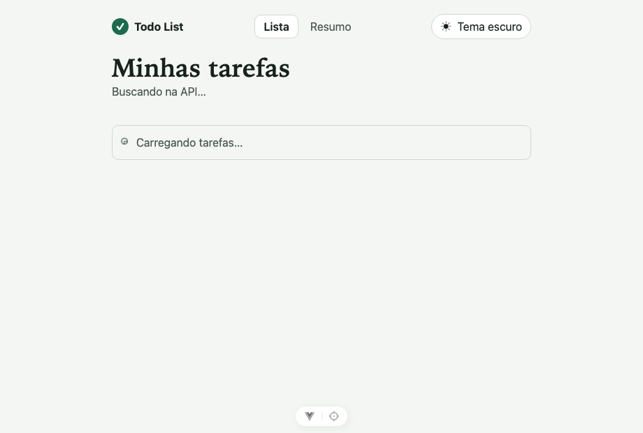
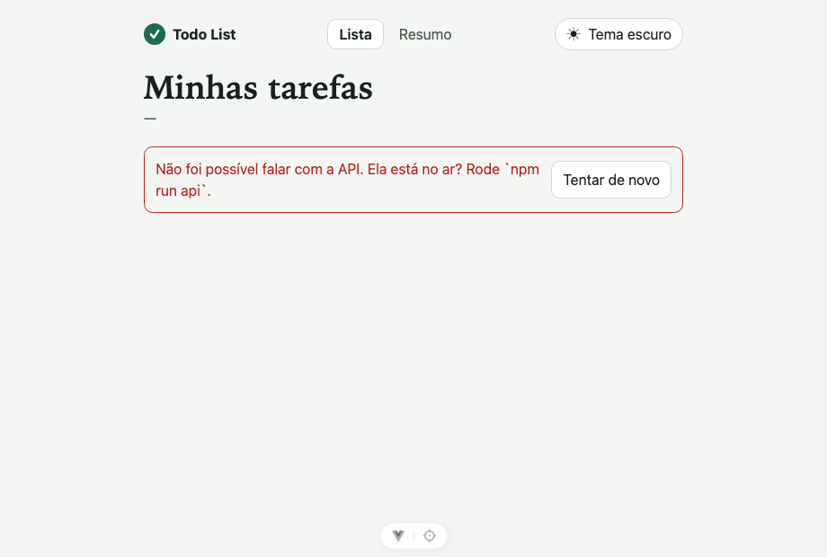

Quatro finais possíveis, uma tela só
Toda busca de dados termina de uma destas quatro maneiras: ainda estou perguntando, deu certo e veio dado, deu certo e veio vazio, falhou. A tela da etapa 18 só dava conta da segunda — e disfarçava a quarta de terceira.
| Critério | Evidência |
|---|---|
| Carregando | Com Slow 3G no DevTools, “Carregando tarefas…” fica visível |
| Falhou | API desligada: mensagem certa e botão de tentar de novo |
| Vazio de verdade | db.json com lista vazia: “Nenhuma tarefa cadastrada.” |
Os quatro estados, na ordem certa
| # | Estado | A tela mostra | ARIA |
|---|---|---|---|
| 1 | Carregando | “Carregando tarefas…” | role="status" |
| 2 | Falhou | Mensagem + “Tentar de novo” | role="alert" |
| 3 | Vazio | “Nenhuma tarefa cadastrada.” | — |
| 4 | Com dados | A lista | — |
A ordem não é arbitrária. Enquanto carrega, não se sabe se está vazio nem se falhou — por isso o v-if="carregando" vem primeiro.
role="status" é anunciado quando o leitor de tela puder; role="alert" interrompe. Carregar é informação; falhar exige atenção.
const carregando = ref(false)
const erro = ref('')
async function carregar() {
carregando.value = true
erro.value = ''
try {
const resposta = await axios.get(`${API_URL}/tarefas`)
tarefas.value = resposta.data
} catch (falha) {
erro.value = mensagemDeErro(falha)
tarefas.value = []
} finally {
carregando.value = false // nos DOIS caminhos
}
}if (falha.response) // o servidor respondeu (404, 500…)
if (falha.request) // ninguém atendeuVer o invisível: Slow 3G e API desligada

DevTools › Network › Throttling › Slow 3G, e recarregar.

Com a API desligada. Compare com a etapa 18, que dizia “Nenhuma tarefa cadastrada.”
{ "tarefas": [] }Agora “Nenhuma tarefa cadastrada.” é verdade — e só aparece quando é.
Tentar de novo funciona sem F5: o clique chama a mesma função carregar. Medido: uma requisição no carregamento, outra a cada clique no botão.
ObservePor que o botão “Tentar de novo” existe, se a pessoa poderia simplesmente apertar F5?
Prática: os quatro estados
- Ponto de partida
- A sua cópia da etapa 18. A pasta da etapa 19 já traz a solução.
- 1
- No composable:
carregandoeerro;carregarcomtry/catch/finally. - 2
mensagemDeErro(falha), separandofalha.responsedefalha.request.- 3
- Na
ListaView: os quatro estados, na ordem, comrole="status"erole="alert". - 4
- Botão Tentar de novo chamando
carregar. - Evidência
- Os quatro estados aparecem; o botão recupera sem F5.
Dica 1
Para testar o estado de carregamento sem esperar: Slow 3G no DevTools.
Dica 2
Limpe o erro no começo de cada tentativa. Senão a mensagem antiga fica na tela depois de dar certo.
Mostrar solução (após a tentativa)
<p v-if="carregando" role="status" aria-live="polite">Carregando tarefas…</p>
<div v-else-if="erro" role="alert">
<p>{{ erro }}</p>
<button type="button" @click="carregar">Tentar de novo</button>
</div>
<template v-else>
<ul v-if="visiveis.length > 0"> … </ul>
<p v-else>Nenhuma tarefa cadastrada.</p>
</template>Erro não é exceção: é um estado da tela
| O que aconteceu | O usuário precisa saber |
|---|---|
Ninguém atendeu (falha.request) | A API pode estar fora; dá para tentar de novo |
| Respondeu 404 | O endereço pedido não existe — é defeito do programa |
| Respondeu 500 | O servidor quebrou; tentar de novo pode resolver |
| Respondeu 401 / 403 | Precisa entrar, ou não tem permissão |
Quatro causas, quatro frases. “Ocorreu um erro” serve para todas e não ajuda em nenhuma.
Três regras para mensagens de erro:
- Diga o que falhou, em palavras da pessoa — “não foi possível carregar as tarefas”, não “GET /tarefas failed”.
- Diga o que fazer — tentar de novo, conferir a conexão, entrar na conta.
- Não exponha o que é seu — pilha de erro, nome de arquivo, caminho interno. Ajuda quem ataca e não ajuda quem usa.
O detalhe técnico vai para o Console ou para o registro do servidor, onde quem programa encontra. A tela fica com a frase útil.
Investigação: o catch que nunca pega
function carregar() {
try {
return axios.get(url).then((r) => (tarefas.value = r.data))
} catch (falha) {
erro.value = 'nunca chega aqui'
}
}forma com try/catch: devolveu uma Promise (o catch NÃO rodou)
-> e ela rejeita com: Network Error
forma com await: o catch pegou: Network ErrorDica
O try/catch é síncrono. Quando a Promise falha, a função já terminou de executar. Não há mais nenhum try em volta.
As duas saídas
awaitdentro dotry: a função fica parada ali até a Promise terminar, e a falha acontece dentro do bloco..catch()encadeado na própria Promise.
O que não funciona é misturar: try/catch em volta de um return de Promise.
Este código aparece em muito material e em muita resposta de IA. Ele parece tratar o erro — e o sintoma é o pior possível: a falha vira um aviso solto no Console e a tela não reage.
Pesquisar: tratar erros de rede sem enganar o usuário
Vue 3, <script setup>, axios. Busco uma lista no onMounted.
Quero tratar os casos: carregando, sucesso com dados, sucesso
vazio e falha. Mostre o código com async/await e explique:
1. por que o finally é necessário;
2. como distinguir "o servidor respondeu com erro" de
"ninguém respondeu", citando a documentação do axios;
3. que papel ARIA usar em cada estado e por quê.
Não use try/catch em volta de um return de Promise.| A resposta deve dizer | Sinal de resposta ruim |
|---|---|
finally roda nos dois caminhos | Põe carregando = false só no try |
falha.response × falha.request | Trata toda falha como “sem internet” |
status para carregando, alert para erro | Ignora acessibilidade, ou usa alert em tudo |
| Limpar o erro antes de tentar de novo | Não menciona (a mensagem velha fica) |
Onde conferir
Repare que o prompt proíbe a forma errada do slide anterior. Dizer o que não fazer é parte do trabalho.
Verificação sem IA
- Por que o
carregando = falsevai nofinallye não no fim dotry? - Qual a diferença entre
role="status"erole="alert"? - Por que o
try/catchem volta de umreturn axios.get(...)não pega a falha?